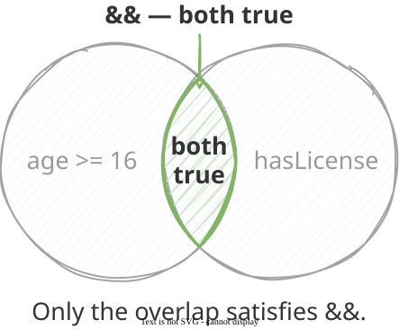
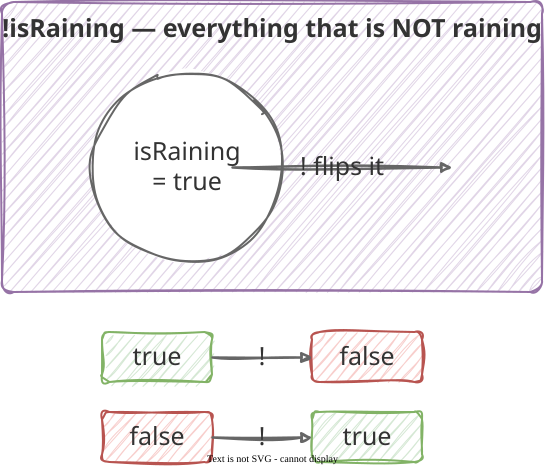
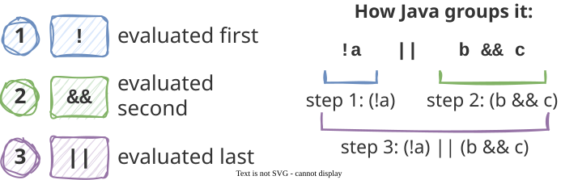
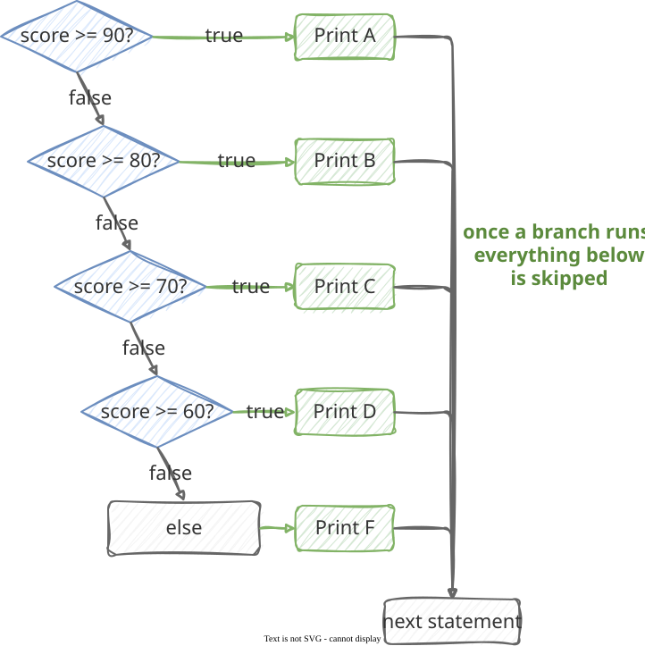
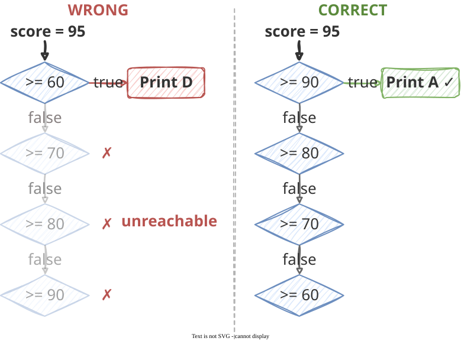
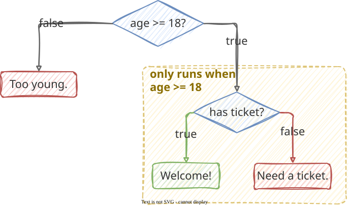
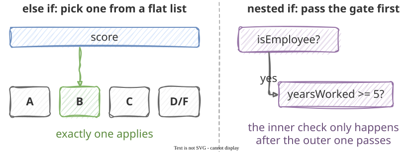
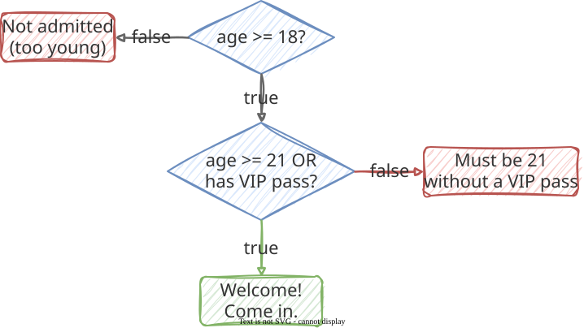

Translate English “and,” “or,” and “not” into Java
Evaluate compound boolean expressions step by step
Write else if chains for multiple mutually exclusive cases
Order else if conditions so no branch is unreachable
Choose between else if and nested if
Trace compound and chained conditionals for a given input
Boolean Expressions — A Quick Recap
Last lecture: a condition is an expression that produces true or false.
score >=60// true or falsename.equals("Alice")// true or falsetemperature <32// true or false
Sometimes one condition is not enough. We say things like:
“You can drive if you are 16 and have a license.”
“You get a discount if you are a student or a senior.”
“The alarm triggers if it is not disarmed.”
Java has an operator for each: && (and), || (or), and ! (not).
The && Operator — AND
&& is true only when both sides are true.
English
Java
“16 or older and has a license”
age >= 16 && hasLicense
“Score above 60 and homework submitted”
score > 60 && homeworkDone
“Price over $50 and you have a coupon”
price > 50 && hasCoupon

= 16' and 'hasLicense'. Both circles are faded gray except the overlapping region in the middle, which is highlighted green and labeled 'both true'. An arrow from the title '&& — both true' points to the overlap. Caption: 'Only the overlap satisfies &&.'" width="380" class="r-stretch">
Truth table
A
B
A && B
true
true
true
true
false
false
false
true
false
false
false
false
In code
int age =20;boolean hasLicense =true;if(age >=16&& hasLicense){ IO.println("You may drive.");}
In English, “or” sometimes means “one or the other, but not both.” In Java, || means at least one — both being true is fine.
The ! Operator — NOT
! flips a value: true becomes false, false becomes true.
English
Java
“Not logged in”
!isLoggedIn
“Game is not over”
!isGameOver
“Name is not Alice”
!name.equals("Alice")
A
!A
true
false
false
true
boolean isRaining =false;if(!isRaining){ IO.println("Good day for a walk!");}// runs — !false is true

Tip
Write !isRaining, not isRaining == false. Same meaning, cleaner code.
Combining Operators
The three operators can be combined into larger conditions.
// 18+ AND (student OR senior)age >=18&&(isStudent || isSenior)// extreme temperature: very cold OR very hottemp <10|| temp >100// NOT banned AND at least 3 credits!isBanned && credits >=3// exam 60+ AND (homework done OR extra credit)examScore >=60&&(homeworkDone || extraCredit)
Precedence — which operator Java applies first:

a || b && c // means a || (b && c)a ||(b && c)// same, but obvious(a || b)&& c // different result!
Tip
Mixing && and ||? Always use parentheses. They make your intent clear and prevent bugs.
The else if Chain
if/else handles two cases. else if handles more.
English: 90+ → A, 80+ → B, 70+ → C, 60+ → D, otherwise → F.
Java checks top to bottom and stops at the first true condition. Exactly one branch runs.
score
First true condition
Output
95
score >= 90
A
83
score >= 80
B
71
score >= 70
C
60
score >= 60
D
45
none — else runs
F

= 90?', 'score >= 80?', 'score >= 70?', 'score >= 60?', followed by a box labeled 'else'. Each diamond's 'true' arrow goes right to a box — 'Print A', 'Print B', 'Print C', 'Print D' — and 'else' leads to 'Print F'. Each diamond's 'false' arrow goes down to the next diamond. From every Print box, an arrow goes right to a single vertical line that runs straight down to a 'next statement' box, bypassing all remaining diamonds. A note reads: 'once a branch runs, everything below is skipped'." width="480">
Ordering else if Conditions
What if we reverse the grade classifier?
// WRONG — conditions in the wrong orderif(score >=60){ IO.println("D");// catches everyone who passes!}elseif(score >=70){ IO.println("C");// unreachable}elseif(score >=80){ IO.println("B");// unreachable}elseif(score >=90){ IO.println("A");// unreachable}else{ IO.println("F");}
With score = 95: 95 >= 60 is true → prints D → done.
Rule: put the most specific condition first.
score >= 90 matches fewer values than score >= 60, so it goes first.
// CORRECT — most specific firstif(score >=90){// only 90 and up IO.println("A");}elseif(score >=80){// only 80–89 IO.println("B");}...

= 60', '>= 70', '>= 80', '>= 90' in that order. The input enters '>= 60', which is true and goes to a red 'Print D' box. The three diamonds below are faded, each marked with a red X, and labeled 'unreachable'. Right, titled 'CORRECT': the same input enters diamonds in reverse order, '>= 90', '>= 80', '>= 70', '>= 60'. The first, '>= 90', is true and goes to a green 'Print A' box with a check mark." width="700" class="r-stretch">
Nested Conditionals
An if can go inside another if when one check only makes sense after another passes.
voidmain(){int age =Integer.parseInt(IO.readln("Your age: "));String ticket = IO.readln("Do you have a ticket? (yes/no) ");if(age >=18){if(ticket.equals("yes")){ IO.println("Welcome! Enjoy the show.");}else{ IO.println("You need a ticket to enter.");}}else{ IO.println("You must be 18 or older to attend.");}}
The inner if runs only when the outer condition (age >= 18) is true.
Indentation shows the structure: each level of nesting is one indent deeper.

= 18?' at the top. Its 'false' arrow goes left and down to a red box 'Too young.' Its 'true' arrow goes right and down into a dashed yellow box labeled 'only runs when age >= 18'. Inside the dashed box is a second diamond 'has ticket?', whose 'true' arrow leads to a green box 'Welcome!' and whose 'false' arrow leads to a red box 'Need a ticket.'" width="560" class="r-stretch">
Warning
Avoid nesting more than two levels deep. An else if chain or a compound condition with && is often cleaner.
Nested if vs else if — Which to Use?
else if — side-by-side cases
if(score >=90){ IO.println("A");}elseif(score >=80){ IO.println("B");}elseif(score >=70){ IO.println("C");}else{ IO.println("D or F");}
One score → one grade.
Nested if — a prerequisite
if(isEmployee){if(yearsWorked >=5){ IO.println("Eligible for bonus.");}else{ IO.println("Not enough years.");}}else{ IO.println("Not an employee.");}
Must be an employee first.

= 5?'. Caption: 'the inner check only happens after the outer one passes'." width="800" class="r-stretch">
Tip
Different values of the same thing? Use else if. One condition a prerequisite for another? Use nested if.
Code Example — Event Admission
Problem: Admit guests who are 21+, or 18+ with a VIP pass. Nobody under 18 gets in.

= 18?'. Its 'false' arrow goes left to a red box 'Not admitted (too young)'. Its 'true' arrow goes down to a second diamond 'age >= 21 OR has VIP pass?'. From the second diamond, 'true' goes down to a green box 'Welcome! Come in.' and 'false' goes right to a red box 'Must be 21 without a VIP pass'." width="600" class="r-stretch">
voidmain(){int age =Integer.parseInt(IO.readln("Your age: "));String vip = IO.readln("VIP pass? (yes/no) ");boolean hasVip = vip.equals("yes");if(age <18){ IO.println("Not admitted — must be at least 18.");}elseif(age >=21|| hasVip){ IO.println("Welcome! Come on in.");}else{ IO.println("Must be 21 or older without a VIP pass.");}}